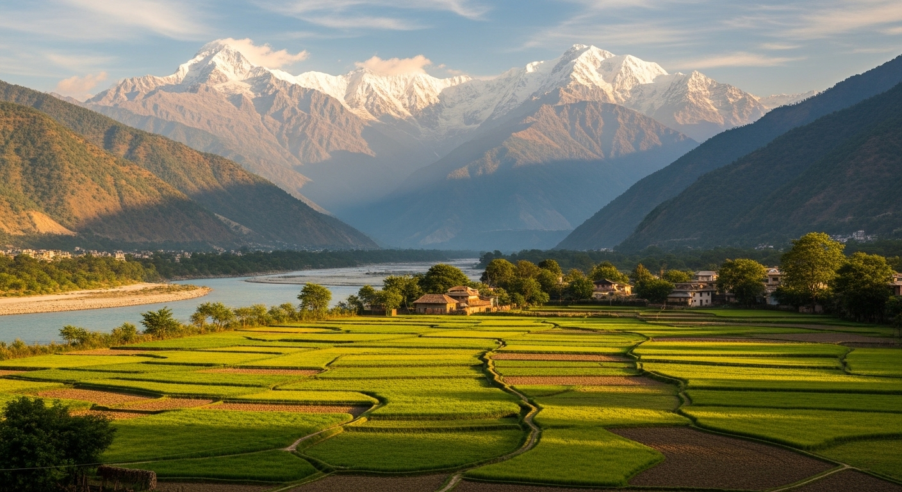
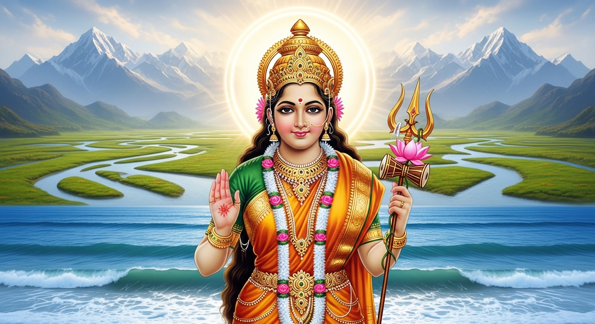

कवि: सोहनलाल द्विवेदी
कविता का स्वर: देशप्रेम, राष्ट्रीयता और सांस्कृतिक गौरव
सारांश: 'वह जन्मभूमि मेरी' एक अत्यंत प्रेरणादायक और देशप्रेम से ओत-प्रोत कविता है। इसमें कवि सोहनलाल द्विवेदी ने भारतवर्ष की प्राकृतिक सुंदरता, महान सांस्कृतिक विरासत और ऐतिहासिक गौरव का अद्भुत वर्णन किया है। कवि अपनी मातृभूमि के हिमालय, नदियों, झरनों और पवन का गुणगान करते हुए उन महान विभूतियों (राम, कृष्ण, बुद्ध) को याद करते हैं जिन्होंने इसी भूमि पर जन्म लेकर पूरे संसार को सत्य, दया और धर्म का मार्ग दिखाया।
शब्दार्थ: नित = हमेशा; सिंधु = समुद्र/हिंद महासागर; त्रिवेणी = गंगा, यमुना और सरस्वती का संगम; छहर रही = फैल रही; स्वर्ण-भूमि = सोने की भूमि/समृद्ध भूमि।
प्रसंग: इस पद्यांश में कवि ने अपनी मातृभूमि भारतवर्ष के अनुपम प्राकृतिक सौंदर्य और भौगोलिक महानता का चित्रण किया है।
भावार्थ: कवि अपनी मातृभूमि का गुणगान करते हुए कहते हैं कि मेरे देश भारत के उत्तर में हिमालय पर्वत शान से मस्तक ऊँचा किए खड़ा है, जो अपनी ऊँचाई से मानो आकाश को चूम रहा है। वहीं इसके दक्षिण में विशाल हिंद महासागर (सिंधु) लहराते हुए मानो भारत माता के चरणों को धो रहा है और खुशी से झूम रहा है। इस भूमि पर गंगा, यमुना और सरस्वती (त्रिवेणी) जैसी पवित्र नदियाँ लहरें मारते हुए बह रही हैं, जिससे यहाँ का कोना-कोना सुंदर और हरा-भरा हो गया है। यहाँ की यह अनोखी और जगमगाती सुंदरता हर कदम (पग-पग) पर बिखरी हुई है। ऐसी पवित्र और धन-धान्य से परिपूर्ण (स्वर्ण-भूमि) धरती ही मेरी जन्मभूमि और मातृभूमि है, जिस पर मुझे गर्व है।
शब्दार्थ: अमराइयाँ = आम के बगीचे; मलय पवन = मलय पर्वत से आने वाली शीतल-सुगंधित हवा; धर्मभूमि = धर्म की भूमि; कर्मभूमि = कर्म करने का स्थान।
प्रसंग: कवि भारत के वनों, बाग-बगीचों और पशु-पक्षियों के आनंदमय जीवन का वर्णन कर रहे हैं।
भावार्थ: कवि कहते हैं कि मेरी जन्मभूमि की पहाड़ियों से अनेक सुंदर झरने कल-कल करते हुए बहते हैं। यहाँ की हरी-भरी झाड़ियों और वनों में तरह-तरह की रंग-बिरंगी चिड़ियाँ मस्ती में गाती और चहचहाती हैं। यहाँ आम के पेड़ों के बहुत घने बगीचे (अमराइयाँ) हैं जहाँ बैठकर कोयल अपनी मधुर आवाज़ में कूकती है (पुकारती है)। दक्षिण दिशा (मलय पर्वत) से आने वाली चंदन की सुगंध से युक्त शीतल और मंद हवा (मलय पवन) जब यहाँ बहती है, तो वह हमारे तन और मन दोनों को ताजगी से भर देती है और सँवार देती है। जहाँ लोग धर्म के मार्ग पर चलते हैं (धर्मभूमि) और निरंतर अच्छे कर्म करते हैं (कर्मभूमि), वह महान देश भारत ही मेरी मातृभूमि और जन्मभूमि है।
शब्दार्थ: रघुपति = भगवान राम; पुनीत = पवित्र; सुयश = सुंदर यश/कीर्ति; दिया दिखाया = ज्ञान का प्रकाश फैलाया।
प्रसंग: इस अंतिम पद्यांश में कवि भारत के गौरवशाली इतिहास और यहाँ अवतरित हुए महापुरुषों को याद करते हुए अपनी मातृभूमि को नमन करते हैं।
भावार्थ: कवि कहते हैं कि यह वही महान धरती है जहाँ मर्यादा पुरुषोत्तम भगवान श्रीराम (रघुपति) और माता सीता ने जन्म लिया था। यही वह पवित्र भूमि है जहाँ भगवान श्रीकृष्ण ने अपनी मधुर वंशी बजाई थी और कुरुक्षेत्र के मैदान में संसार को पवित्र 'गीता' का उपदेश (ज्ञान) दिया था। यह वही देश है जहाँ महात्मा गौतम बुद्ध ने अवतार लिया और इस भूमि के यश और सम्मान (सुयश) को पूरी दुनिया में फैलाया। उन्होंने पूरे संसार को करुणा, अहिंसा और दया का पाठ पढ़ाया और अज्ञान के अंधकार में भटकते हुए लोगों को ज्ञान का प्रकाश (दिया) दिखाया। अन्याय का नाश करने वाली यह युद्ध-भूमि और शांति का संदेश देने वाली यह बुद्ध-भूमि ही मेरी प्यारी जन्मभूमि और मातृभूमि है।
